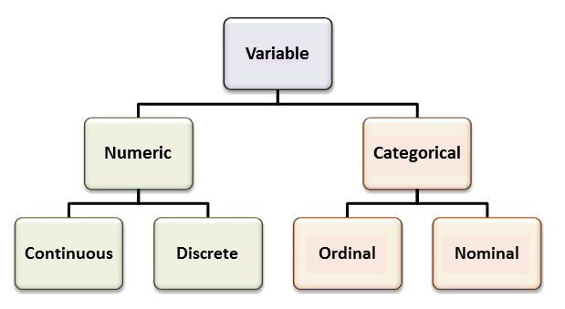
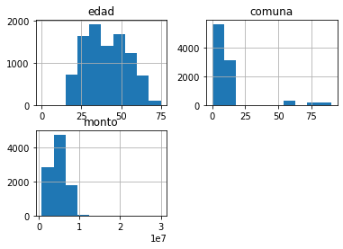
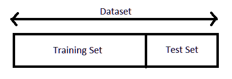

Preprocesamiento de datos¶
import warnings # Para ignorar mensajes de advertencia
warnings.filterwarnings("ignore")
Tipos datos:¶
Variables continuas:
Pueden tomar cualquier número real positivo o negativo, por ejemplo, peso de 70,25 Kg.
Variables discretas:
Estas variables pueden tomar solo un valor particular del conjunto permitido de valores posibles, por ejemplo, nombre del barrio. Incluso estas variables pueden tomar valores numéricos, pero que su orden no tiene ninguna influencia en el problema, por ejemplo, el número de la comuna a la cual pertenece el barrio. El número de la comuna puede ser 1 o 16, pero el orden no tiene ninguna influenza, 16 en este caso no sería más importante que 1.
Datos nominales:
Los datos nominales son un tipo de datos que pueden tomar cualquier valor no numérico arbitrario. Este tipo de datos no se pueden medir ni comparar. Los datos nominales pueden ser cualitativos o cuantitativos; sin embargo, debido a su naturaleza, sobre estos no se pueden aplicar operaciones aritméticas. Por ejemplo, los nombres, la dirección, el sexo, etc., pueden considerarse atributos de datos nominales. La única tendencia central estadística que se puede estudiar es la moda, o la cantidad que ocurre con mayor frecuencia en el atributo que se estudia. La media y la mediana no tienen sentido para los datos nominales.
Datos ordinales:
Los datos ordinales son un tipo de datos cuyos valores siguen un orden. Aunque los valores no tienen una noción de diferencias e incrementos, se pueden comparar como mayores, menores o iguales entre sí. La mediana puede considerarse como una medida válida de tendencias centrales. Por ejemplo, las tallas de camisetas (S, M, L, XL, etc.), la escala de Likert en las encuestas de clientes (Siempre, A veces, Rara vez, Nunca), etc., son ejemplos de datos ordinales.

DataTypes1¶
Importar el dataset:¶
import pandas as pd
df = pd.read_csv("creditos_otorgados_a_microempresarios.csv", sep = ";", decimal=",")
print(df.head())
edad sexo actividad descripcion_de_actividad barrio 0 62 hombre produccion produccion santa elena 1 51 hombre comercio ventas diversas miranda 2 40 mujer servicios publicidad - comunicaciones belen granada 3 39 hombre produccion produccion vereda el rosario 4 35 hombre servicios servicios cristobal comuna fecha monto 0 90 25/05/2016 6890000 1 4 24/11/2017 6000000 2 16 21/03/2018 4500000 3 90 12/08/2016 6890000 4 12 25/04/2016 6890000
Funciones para analizar el dataset:
info(): es un método para una rápida descripción de los datos.
value_counts(): para averiguar las categorías de las variables
categóricas.
describe(): muestra un resumen de los atributos numéricos.
hist(): se puede aplicar a cada atributo numérico. Se puede realizar
un histograma a la vez o para todo el conjunto de datos (df.hist()).
df.info()
<class 'pandas.core.frame.DataFrame'>
RangeIndex: 9441 entries, 0 to 9440
Data columns (total 8 columns):
# Column Non-Null Count Dtype
--- ------ -------------- -----
0 edad 9441 non-null int64
1 sexo 9441 non-null object
2 actividad 9441 non-null object
3 descripcion_de_actividad 9441 non-null object
4 barrio 9441 non-null object
5 comuna 9441 non-null int64
6 fecha 9441 non-null object
7 monto 9441 non-null int64
dtypes: int64(3), object(5)
memory usage: 590.2+ KB
edad y monto son variables numéricas.
Las demás variables categóricas.
Cantidad de categorías que tiene la variable sexo:
df.value_counts("sexo")
sexo
mujer 6264
hombre 3177
dtype: int64
Cantidad de categorías que tiene la variable actividad:
df.value_counts("actividad")
actividad
comercio 5766
produccion 1846
servicios 1829
dtype: int64
df.describe()
| edad | comuna | monto | |
|---|---|---|---|
| count | 9441.000000 | 9441.000000 | 9.441000e+03 |
| mean | 40.449635 | 11.879250 | 4.677145e+06 |
| std | 13.033100 | 18.142568 | 2.106056e+06 |
| min | 0.000000 | 0.000000 | 6.900000e+05 |
| 25% | 29.000000 | 4.000000 | 3.000000e+06 |
| 50% | 39.000000 | 7.000000 | 5.000000e+06 |
| 75% | 51.000000 | 10.000000 | 6.000000e+06 |
| max | 75.000000 | 90.000000 | 3.000000e+07 |
df.hist();

Transformación de atributos categóricos:¶
Considere el atributo Sexo, que puede tener tres valores: masculino, femenino y otro. Este es un atributo nominal ya que no se pueden aplicar operaciones aritméticas y no podemos comparar los valores entre sí. Esto se puede expresar como un vector de valores posibles.
Este tipo de transformación se denomina codificación one-hot (one-hot encoding). Las características que sufren este tipo de transformación se convierten en matrices binarias, donde se crea una columna binaria para cada valor posible de un atributo. Si el valor en la columna generada coincide con el valor real, se considera 1 o 0.
La mayoría de los algoritmos de Machine Learning prefieren trabajar con
números, así que vamos a convertir estas categorías de texto a números.
Para esto, podemos usar la clase LabelEncoder de Scikit-Learn:
Transformación de la variable ``sexo``:
df.value_counts("sexo")
sexo
mujer 6264
hombre 3177
dtype: int64
from sklearn.preprocessing import LabelEncoder
Creamos un objeto para realizar la transformación y lo llamaremos
encoder.
sexo_encoder = LabelEncoder()
Transformaremos la variable sexo y sobrescribiremos el dataset
df.
df["sexo"] = sexo_encoder.fit_transform(df["sexo"])
print(df.head())
edad sexo actividad descripcion_de_actividad barrio 0 62 0 produccion produccion santa elena 1 51 0 comercio ventas diversas miranda 2 40 1 servicios publicidad - comunicaciones belen granada 3 39 0 produccion produccion vereda el rosario 4 35 0 servicios servicios cristobal comuna fecha monto 0 90 25/05/2016 6890000 1 4 24/11/2017 6000000 2 16 21/03/2018 4500000 3 90 12/08/2016 6890000 4 12 25/04/2016 6890000
Se transformó la variable categórica sexo en un vector binario así:
Hombre = 0.
Mujer = 1
El orden de los números se asignan en orden alfabético.
Transformación de la variable ``actividad``:
df.value_counts("actividad")
actividad
comercio 5766
produccion 1846
servicios 1829
dtype: int64
La variable actividad tiene 3 categorías y como cada categoría no es
más importante que las demás no se puede asignar tres valores numéricos
porque se estaría indicando que 2 es mayor que 1 y que 0, lo cual no es
cierto en este caso.
Para la transformación no se realizará sobrescribiendo el dataset porque necesitaríamos 3 vectores (uno por cada categoría) con valores binarios.
from sklearn.preprocessing import OneHotEncoder
actividad_encoder = OneHotEncoder()
actividad_1hot = actividad_encoder.fit_transform(df[["actividad"]])
actividad_1hot
<9441x3 sparse matrix of type '<class 'numpy.float64'>'
with 9441 stored elements in Compressed Sparse Row format>
actividad_1hot.toarray()
array([[0., 1., 0.],
[1., 0., 0.],
[0., 0., 1.],
...,
[0., 1., 0.],
[1., 0., 0.],
[0., 0., 1.]])
La primera fila [0., 1., 0.] indica producción, la segunda fila
[1., 0., 0.] es comercio y la tercera [0., 0., 1.] es
servicios.
comercio |
producción |
servicios |
|---|---|---|
0 |
1 |
0 |
1 |
0 |
0 |
0 |
0 |
1 |
actividad = pd.DataFrame(actividad_1hot.toarray())
print(actividad)
0 1 2
0 0.0 1.0 0.0
1 1.0 0.0 0.0
2 0.0 0.0 1.0
3 0.0 1.0 0.0
4 0.0 0.0 1.0
... ... ... ...
9436 0.0 0.0 1.0
9437 1.0 0.0 0.0
9438 0.0 1.0 0.0
9439 1.0 0.0 0.0
9440 0.0 0.0 1.0
[9441 rows x 3 columns]
Para las variables ordinales se usa:
from sklearn.preprocessing import OrdinalEncoder
ordinal_encoder = OrdinalEncoder()
variable_encoded = ordinal_encoder.fit_transform(variable)
División del conjunto de datos:¶
Supongamos que las variables independientes son: edad, sexo y
actividad y la variable dependiente será monto.
X = pd.concat([df[["edad", "sexo"]], actividad], axis = 1)
print(X)
edad sexo 0 1 2
0 62 0 0.0 1.0 0.0
1 51 0 1.0 0.0 0.0
2 40 1 0.0 0.0 1.0
3 39 0 0.0 1.0 0.0
4 35 0 0.0 0.0 1.0
... ... ... ... ... ...
9436 38 0 0.0 0.0 1.0
9437 61 0 1.0 0.0 0.0
9438 34 0 0.0 1.0 0.0
9439 49 1 1.0 0.0 0.0
9440 41 1 0.0 0.0 1.0
[9441 rows x 5 columns]
y = df["monto"]
print(y)
0 6890000
1 6000000
2 4500000
3 6890000
4 6890000
...
9436 8281000
9437 6000000
9438 5200000
9439 8281000
9440 4000000
Name: monto, Length: 9441, dtype: int64
División del conjunto de datos:¶
Para los modelos de Machine Learning se acostumbra a dividir los datos en conjunto de entrenamiento (train) y conjunto de prueba (test). Se separa el 20% para test o menos si el conjunto de datos es demasiado grande. Por lo general, se realiza la división (split) de los datos de manera aleatoria.
Scikit-Learn proporciona algunas funciones para dividir conjuntos de
datos en múltiples subconjuntos de varias maneras. La función más simple
es train_test_split().
Cantidad de observaciones del conjunto de datos:
len(X)
9441
20%: test.
80%: train.

Train-Test-set¶
from sklearn.model_selection import train_test_split
Conjunto de entrenamiento:
X_trainyy_train.Conjunto de prueba:
X_testyy_test.Tamaño del conjunto de prueba:
test_size=0.2.Valor semilla:
random_state=0. En este caso el valor semilla es 0, pero se puede especificar cualquier valor entero. Usar el mismo valor semilla garantiza que el proceso pueda ser replicado y obtener siempre los mismos resultados.
X_train, X_test, y_train, y_test = train_test_split(X, y, test_size=0.2, random_state=0)
print(X_train)
edad sexo 0 1 2
377 45 0 0.0 0.0 1.0
5643 51 0 1.0 0.0 0.0
3132 43 1 1.0 0.0 0.0
8785 23 1 1.0 0.0 0.0
2760 35 1 1.0 0.0 0.0
... ... ... ... ... ...
7891 22 0 0.0 0.0 1.0
9225 19 1 1.0 0.0 0.0
4859 41 1 0.0 1.0 0.0
3264 54 1 1.0 0.0 0.0
2732 28 1 1.0 0.0 0.0
[7552 rows x 5 columns]
len(X_train)
7552
print(X_test)
edad sexo 0 1 2
8423 27 1 1.0 0.0 0.0
7605 35 1 0.0 0.0 1.0
8242 27 1 1.0 0.0 0.0
4337 52 1 1.0 0.0 0.0
8662 29 0 0.0 1.0 0.0
... ... ... ... ... ...
2761 34 1 1.0 0.0 0.0
1621 31 1 1.0 0.0 0.0
460 56 0 0.0 0.0 1.0
800 54 1 1.0 0.0 0.0
7512 29 1 1.0 0.0 0.0
[1889 rows x 5 columns]
len(X_test)
1889
Escalado de variables:¶
Una de las transformaciones más importantes es el escalado de variables (feature scaling).
Algunos algoritmos de Machine Learning no funcionan bien cuando las variables numéricas de entrada tienen escalas muy diferentes.
Hay dos formas comunes de hacer que todos los atributos tengan la misma escala: escala minmax y estandarización.
Al igual que con todas las transformaciones, es importante ajustar los escaladores solo a los datos de entrenamiento, no al conjunto de datos completo.
Min-Max scaler:
El escalado min-max también es llamado normalización. Los valores se transforman en el rango entre 0 y 1. La observación mínima será el 0 y la observación mayor será el 1, las demás observaciones están ubicadas entre estos dos valores de manera proporcional. La transformación se realiza de la siguiente manera:
Scikit-Learn proporciona un transformador llamado MinMaxScaler
para esto. Tiene un hiperparámetro feature_range que le permite
cambiar el rango si, por alguna razón, no desea 0–1.
from sklearn.preprocessing import MinMaxScaler
Creamos un objeto con el nombre scaler para luego aplicar la
trasnformación.
sc = MinMaxScaler()
sc.fit(X_train)
X_train_std = sc.transform(X_train)
X_test_std = sc.transform(X_test)
Note que se usaron los mismo parámetros del X_train para transformar
X_test.
print(X_train_std)
[[0.6 0. 0. 0. 1. ]
[0.68 0. 1. 0. 0. ]
[0.57333333 1. 1. 0. 0. ]
...
[0.54666667 1. 0. 1. 0. ]
[0.72 1. 1. 0. 0. ]
[0.37333333 1. 1. 0. 0. ]]
print(X_test_std)
[[0.36 1. 1. 0. 0. ]
[0.46666667 1. 0. 0. 1. ]
[0.36 1. 1. 0. 0. ]
...
[0.74666667 0. 0. 0. 1. ]
[0.72 1. 1. 0. 0. ]
[0.38666667 1. 1. 0. 0. ]]
Estandarización:
La estandarización no limita los valores a un rango específico, lo que puede ser un problema para algunos algoritmos como las redes neuronales artificiales porque muchas veces esperan valores de entrada entre 0 y 1.
Las variables estandarizadas se restan por su valor medio y se divide por la desviación estándar. De esta manera, las variables estandarizadas tendrán una media cero.
Donde \(\mu\) es la media y \(s\) la desviación estándar de las muestras. La estandarización se mucho menos afectada por los valores atípicos, esta es una ventaja sobre min-max scaler.
Scikit-Learn proporciona un transformador llamado StandardScaler
para la estandarización.
from sklearn.preprocessing import StandardScaler
Creamos un objeto con el nombre StandardScaler para luego aplicar la
transformación.
sc = StandardScaler()
sc.fit(X_train)
X_train_std = sc.transform(X_train)
X_test_std = sc.transform(X_test)
print(X_train_std)
[[ 0.34897712 -1.40805626 -1.25178323 -0.49411695 2.04269497]
[ 0.80956349 -1.40805626 0.79886036 -0.49411695 -0.48954935]
[ 0.19544833 0.71019889 0.79886036 -0.49411695 -0.48954935]
...
[ 0.04191954 0.71019889 -1.25178323 2.02381236 -0.48954935]
[ 1.03985667 0.71019889 0.79886036 -0.49411695 -0.48954935]
[-0.95601759 0.71019889 0.79886036 -0.49411695 -0.48954935]]
print(X_test_std)
[[-1.03278199 0.71019889 0.79886036 -0.49411695 -0.48954935]
[-0.41866683 0.71019889 -1.25178323 -0.49411695 2.04269497]
[-1.03278199 0.71019889 0.79886036 -0.49411695 -0.48954935]
...
[ 1.19338546 -1.40805626 -1.25178323 -0.49411695 2.04269497]
[ 1.03985667 0.71019889 0.79886036 -0.49411695 -0.48954935]
[-0.8792532 0.71019889 0.79886036 -0.49411695 -0.48954935]]